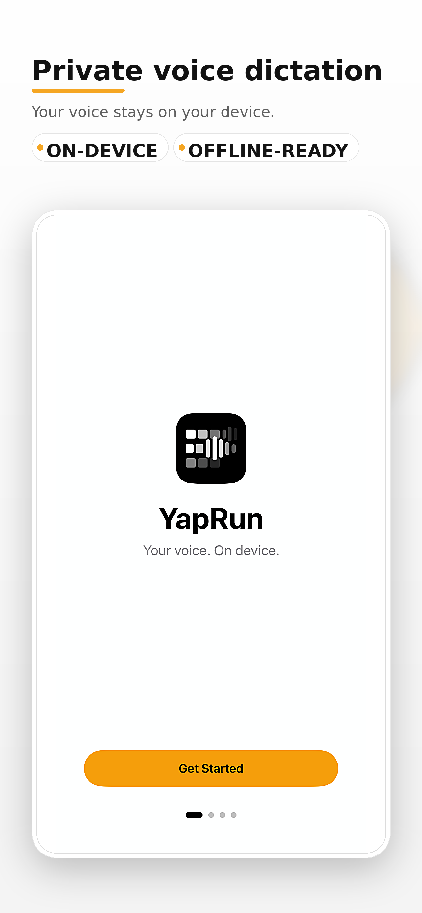
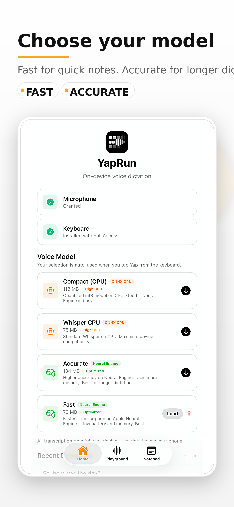
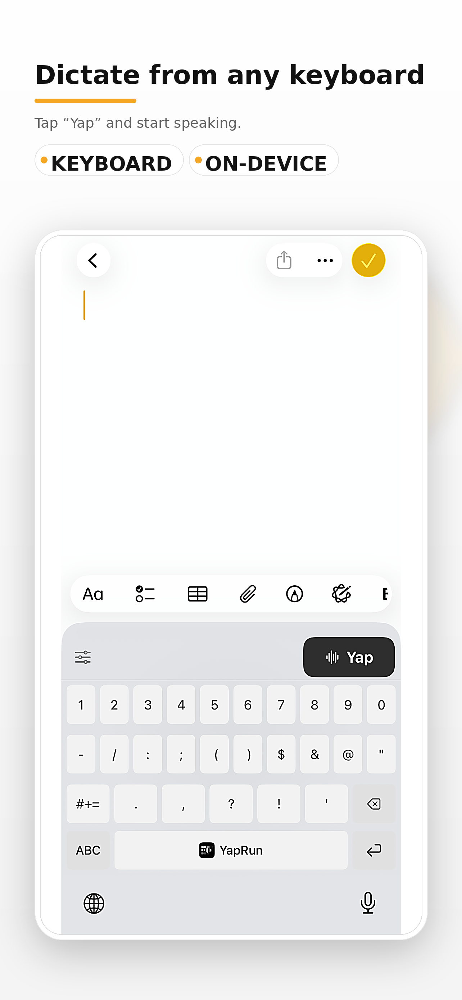
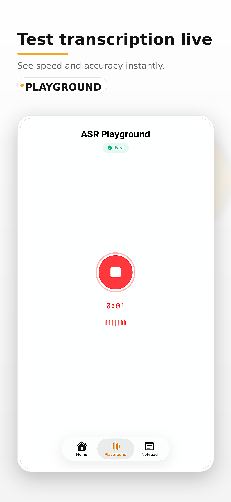
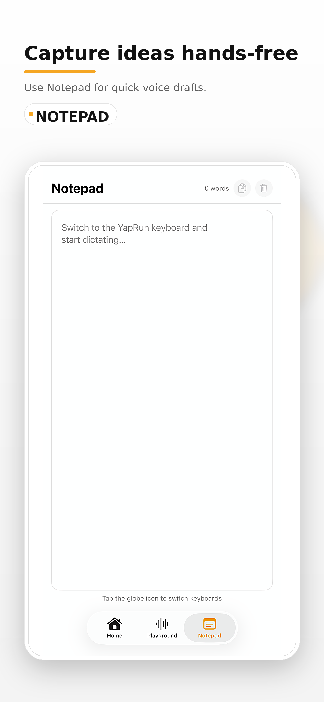
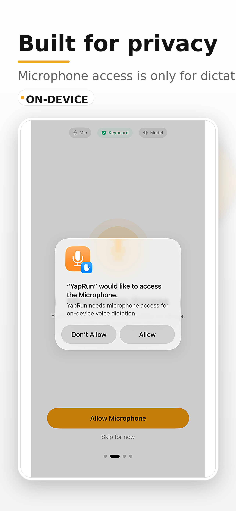
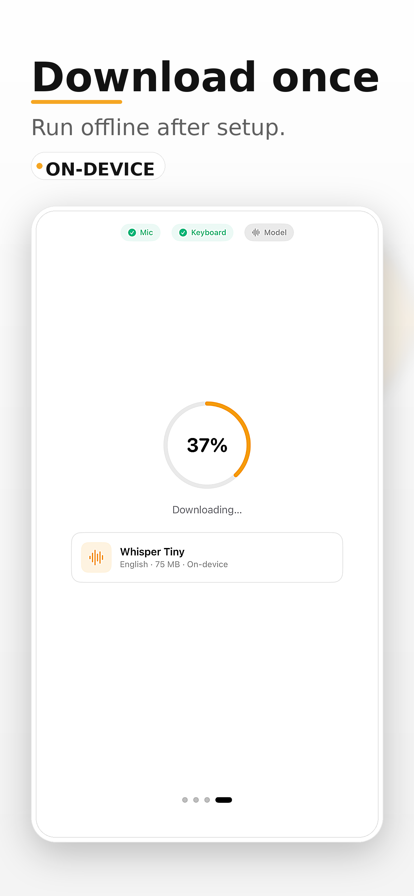
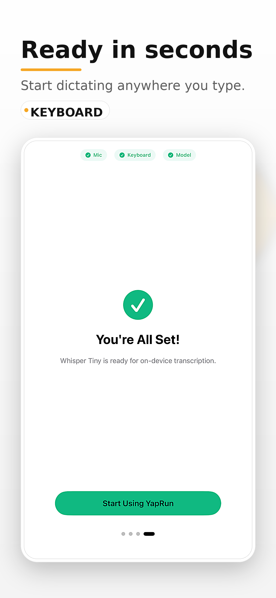

stop typing.
start yapping.
on-device voice dictation that never leaves your phone.
no cloud. no subscriptions. no cap.
iOS 16+ · macOS 14+ · Free · No account required


see it in action.
system keyboard. on-device AI. works everywhere.








set up in 2 minutes. yap forever.
Set up in seconds
Add the YapRun keyboard, allow mic access, and download a voice model. One time only.
Pick your model
Choose Fast for quick texts or Accurate for longer dictation. Runs fully on your device.
Tap Yap, start talking
Switch to YapRun in any app. Tap the Yap button. Your words appear as text instantly.
privacy isn't a feature. it's the whole point.
your voice never leaves
your phone.
No cloud processing
Audio is processed on-device and immediately discarded. Nothing is ever transmitted.
No accounts
No sign-up. No email. No profile. Just open the app and go.
No tracking
No analytics. No ads. No third-party SDKs. Zero data collection.
questions? we got answers.
ready to stop typing?
download YapRun and let your voice do the work.
Free · No account required · iOS 16+ · macOS 14+